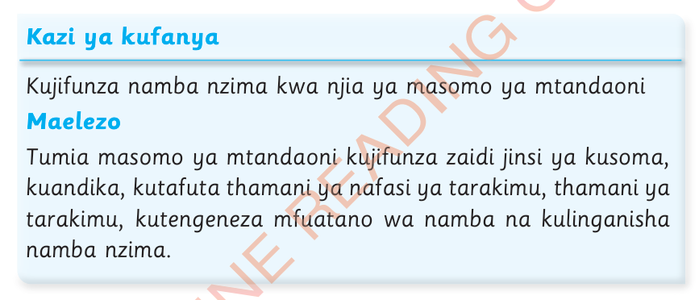
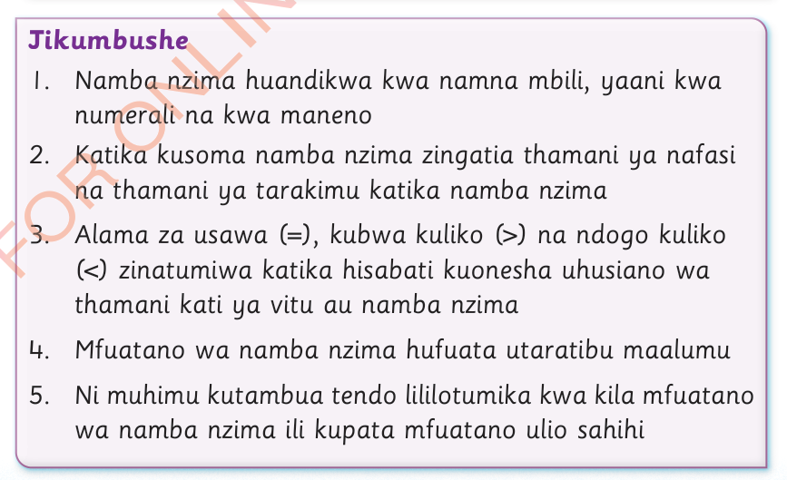

10.
Pamela alinunua maembe matatu siku ya kwanza, kisha aliendelea kununua maembe mawili zaidi ya siku iliyotangulia.
Alinunua maembe mangapi siku ya nne?
11.
Mkeya ana watoto watano.
Tofauti ya umri kati ya kila watoto wawili wanaofuatana ni miaka minne.
Ikiwa mtoto wa kwanza ana miaka 39, je mtoto wa mwisho ana umri gani?

Kazi ya kufanyaKujifunza namba nzima kwa njia ya masomo ya mtandaoniMaelezoTumia masomo ya mtandaoni kujifunza zaidi jinsi ya kusoma, kuandika, kutafuta thamani ya nafasi ya tarakimu, thamani ya tarakimu, kutengeneza mfuatano wa namba na kulinganisha namba nzima.

Jikumbushe1.Namba nzima huandikwa kwa namna mbili, yaani kwa numerali na kwa maneno2.Katika kusoma namba nzima zingatia thamani ya nafasi na thamani ya tarakimu katika namba nzima3.Alama za usawa (=), kubwa kuliko (>) na ndogo kuliko (<) zinatumiwa katika hisabati kuonesha uhusiano wa thamani kati ya vitu au namba nzima4.Mfuatano wa namba nzima hufuata utaratibu maalumu5.Ni muhimu kutambua tendo lililotumika kwa kila mfuatano wa namba nzima ili kupata mfuatano ulio sahihi